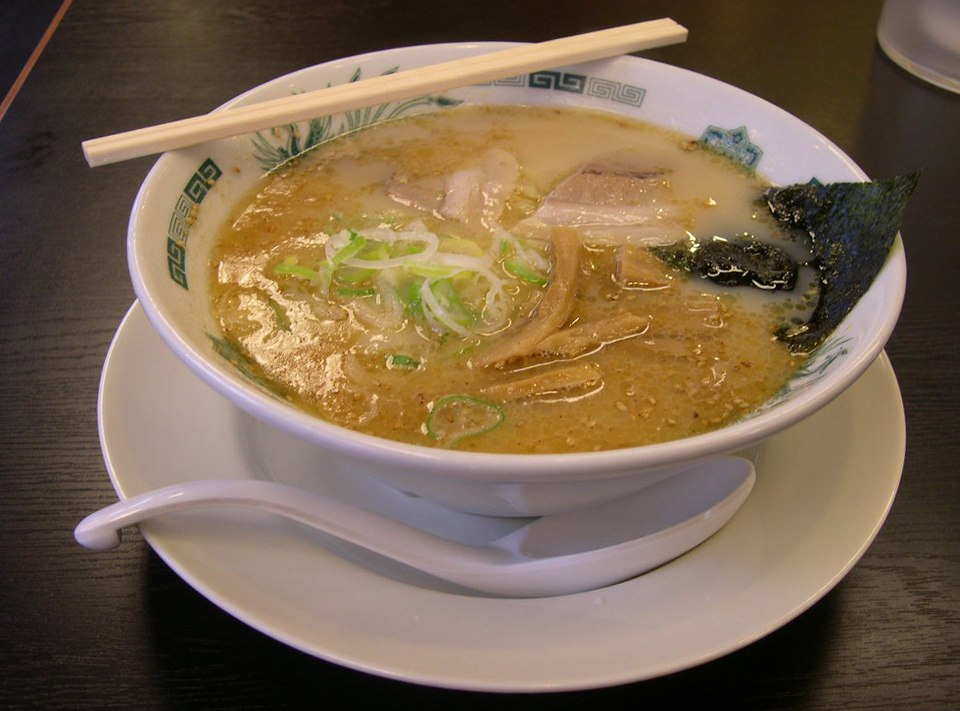
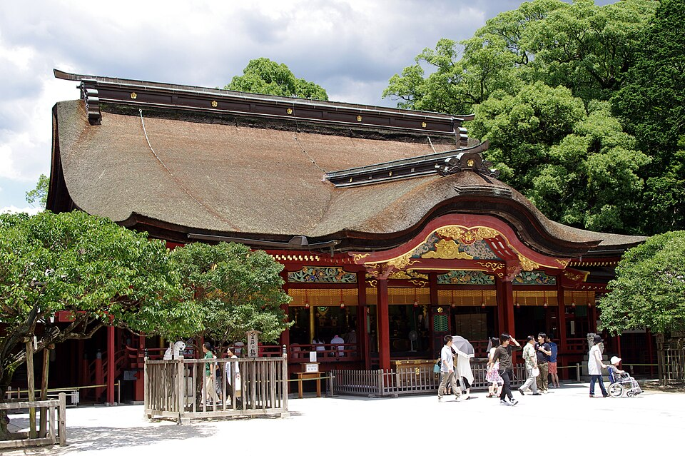
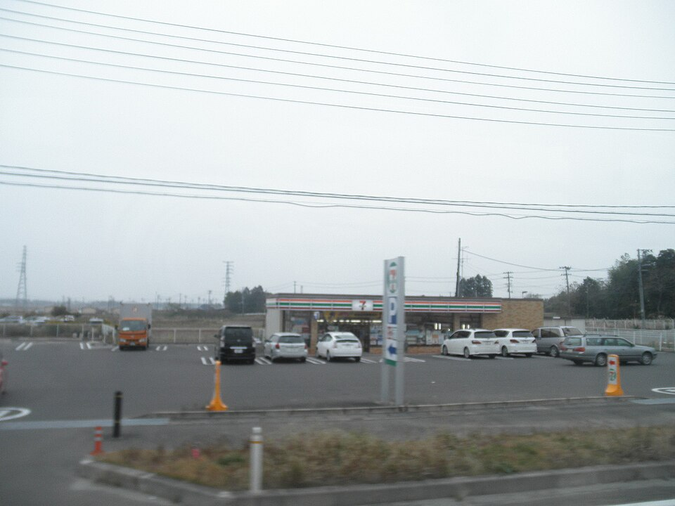

일정 & 길찾기
탭하면 구글맵 길찾기
🚇 지하철
🚌 버스
🚶 도보
📍 하차역
✏️ 일정 편집
지금 보는 Day 1 일정만 편집돼요 · 순서는 ⠿ 손잡이를 꾹 눌러 드래그 · 변경은 자동 저장(오프라인)
＋ 새 일정 추가
💬 회화 메모 (선택)
통합 가계부
현재까지 총 지출액
¥0
약 0원 · 100엔 ≈ 900원
일자별 지출
직접 추가
아직 지출 내역이 없어요.
일정 탭의 각 장소 카드에서 바로 기입해보세요 💳
일정 탭의 각 장소 카드에서 바로 기입해보세요 💳
준비 & 예약
📋 VJW 등록용 정보 (복사해서 입력)
입국 예정일
2026.07.07 (화)
숙소 주소
3-14-28 Minoshima, Hakata Ward, Fukuoka 812-0017
unito residence 美野島
숙소 전화번호
바우처 참고 (추후 입력)
📶 eSIM (가장 간편)
출국 전 구매 → 받은 QR로 설정 › 셀룰러 › eSIM 추가. 물리 유심 교체 없이 현지 자동 연결돼요.
💳 물리 유심(USIM) 사용 가이드
📦 USIM 구성품
유심카드 · 유심핀 · 사용 설명서로 구성돼 있어요.
📱 지원 기기 확인
✔ 가능컨트리락 해지된 2015년 이후 출시 스마트폰
✘ 불가2014년 이전 출시 기종 · 갤럭시 A3/J1/J2/J3 · LG X/V10 · 루나폰/팬택/소니/블랙베리 전 기종
🔧 사용 방법 (기기별 순서)
- 1. 전원 끄기 → 유심핀으로 측면 유심 트레이 분리
- 2. 기존 유심 빼고 해외 유심으로 교체 (금색 칩 방향 주의)
- 3. 트레이 재삽입 후 전원 ON
- 4. 설정 › 연결 › 모바일 네트워크 › 데이터 로밍 ON
- 5. APN 자동 설정 대기 (안 되면 설명서의 APN 수동 입력)
- 6. 데이터 연결 확인 → 완료 ✅
🚨 교체 전 기존 유심 분실 주의 · 도착 후 데이터 로밍 ON 필수 · eSIM은 회선 선택도 체크
※ 이용에 어려움이 있으면 24시간 운영하는 유심사 고객센터로 문의하세요.
✈️ 공항 생존 가이드
📍 위치 · 국제선 터미널 1층 도착층 세븐뱅크(Seven Bank) ATM
💡 입국심사 후 수하물 찾고 나오면 1층에 바로 보여요.
📍 위치 · 국내선 터미널 지하 2층 (지하철 후쿠오카공항역 매표소)
🚨 국제선 터미널엔 지하철이 없어요! 1층 외부 1번 승강장에서 무료 셔틀버스를 타고 국내선 터미널로 약 15분 이동 → 지하 2층으로 내려가기.
📍 반납 · 하카타역 · 텐진역 · 공항 국내선 지하 2층 등 지하철역 안내창구
🚨 출국하는 날 국제선 터미널에선 반납 불가! 반드시 출국 전 지하철역에서 반납하세요.
💡 잔액이 남으면 수수료 220엔 차감. 편의점에서 잔액을 0원으로 다 쓰고 반납하면 보증금 500엔 전액 환불!
가는편 · 7/7(화)
14:50 → 16:00
김해 KHH
14:50
1시간 10분
✈
직항
후쿠오카 FUK
16:00
ZE943 이스타항공
예약번호 D3IR8S
오는편 · 7/11(토)
11:05 → 12:00
후쿠오카 FUK
11:05
55분
✈
직항
김해 KHH
12:00
TW232 티웨이항공
예약번호 Y35CGF
숙소 · 4박
7/7 → 7/11
유니토 레지던스 미노시마
unito residence 美野島 · 룸 102 더블
3 Chome-14-28 Minoshima, Hakata Ward, Fukuoka, 812-0017
🕓 체크인 7/7 16:00 이후 · 체크아웃 7/11 10:00 이전 (규정 엄수)
🛒 미노시마 주변 보급소
밤늦게 물·간식 사러 나갈 때 · 전부 숙소 도보권
준비물 체크리스트
0/0로컬 꿀팁
여행 중 짬 날 때 읽어보는 현지 가이드 · 제목을 탭하면 펼쳐져요

후쿠오카(하카타)는 뽀얗고 진한 돼지뼈 육수인 돈코츠 라멘의 발상지예요. 바쁜 수산시장 상인들이 빨리 먹을 수 있도록 아주 얇은 면(세면)을 쓴 것이 특징이죠.
💡 이치란에서는 면 익힘 정도를 고를 수 있어요. 현지인처럼 살짝 덜 익혀 꼬들꼬들한 カタ麺(카타멘)으로 주문해 보는 걸 추천!

다자이후는 학문의 신 스가와라 미치자네를 모시는 신사예요.
🐂 고신규(소 동상) · 입구에 있는 소 동상의 머리를 만지면 머리가 좋아진다는 전설이 있어요.
🍡 우메가에모찌(매화떡) · 겉은 바삭, 속은 팥 앙금이 든 구운 떡. 병마를 물리치고 정신이 맑아진다고 하니 참배 전후에 갓 구운 걸로 하나 꼭!

🔵 로손 (Lawson)
- • Uchi Café 모찌롤 — 한국 편의점과 차원이 다른 쫀득함
- • 카라아게군 — 계산대 옆 카운터 닭튀김, 야식 맥주 안주 1티어
- • 쟈지 우유 푸딩
🟢 세븐일레븐
- • 타마고 산도 — 계란 샌드위치의 근본
- • 세븐카페 스무디 — 냉동고 과일컵을 기계에 돌려 먹는 리얼 스무디
사진 © Wikimedia Commons (CC BY-SA) · 실제 매장/메뉴와 다를 수 있어요
여행 가이드
주제별 미니 가이드 · 카드를 누르면 열리고, 그 화면에서 ← 여행 대시보드로 언제든 돌아와요
🍮
›
🛍️
›
📍
›
푸딩 도감
편의점 밀봉 푸딩 20종 도감 · 담기 · 정산
파르코 텐진 가이드
텐진 파르코 층별 쇼핑·먹거리 가이드
장소별 상세 가이드
Day별 장소 리뷰·꿀팁·꼭 살 것 총정리
🎨
각 가이드는 고유 색(캐러멜·코럴·제이드)으로 구분돼요. 색이 곧 "지금 어느 가이드에 있는지" 표시라, 화면이 바뀌어도 길을 잃지 않아요.